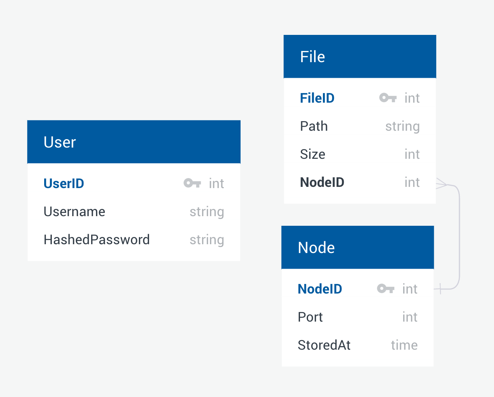
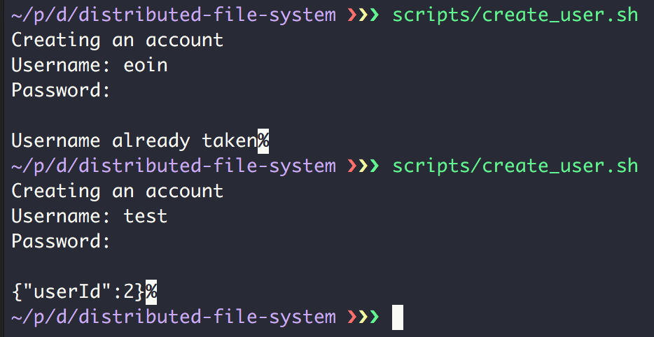
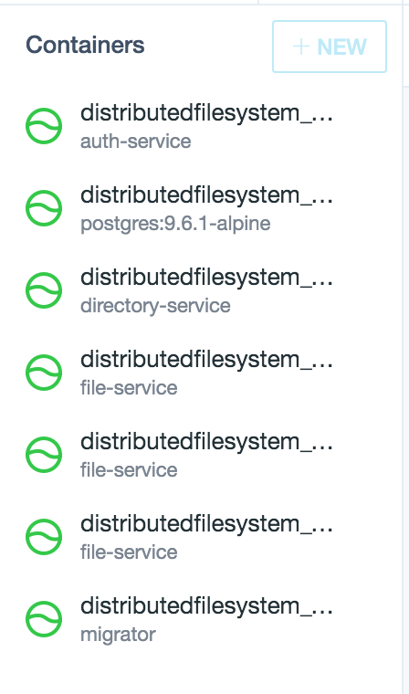

Distributed File System
Table of Contents
- 1. High-level System Architecture and Design
- 2. Authentication Service and Users
- 3. Directory Service
- 4. File Service
- 5. Replication Across File Nodes
- 6. Locking Scheme
- 7. FUSE File System Driver
- 8. Migrator Service
- 9. Use of Docker and Docker Compose
- 10. Compiling and Running
- 11. Screenshots and Demonstration
The goal of this project was to create a distributed file system. In this report I outline my approach to the high-level system design of the file system including technology used and system architecture. The individual sections detail the more intricate aspects of the implementation of each of the systems and gives justification for specific decisions made and the advantages and tradeoffs caused by these decisions.
Included in the source code repository is the source for my authentication, directory, file and migrator services. Also included is a FUSE based file system driver that can be used to access my file system at the operating system level. Lastly, a set of useful scripts and this documentation is also included.
1 High-level System Architecture and Design
The approach taken in the design of this system is very similar to that of the Andrew File System (AFS). In the system created I placed an emphasis on the simple model of last write wins. This ensures an always consistent view at the contents of a particular file however may introduce issues to do with lost writes should a client fail to win the write race.
The system was implemented as a set of Haskell REST services implemented using
the servant library to define the APIs of each service. These services
included a file service that I was able to create multiple copies of using
Docker and Docker Compose, a directory service and an authentication service. An
auxiliary database migration service was created to ensure database consistency.
Of course this also implies the use of a database system. I chose to use the
robust Postgresql RDBMS with the tried and tested persistent Haskell package
to interface with it.
A number of shared data models were necessary to create to model the different kinds of values of entities involved in the system. The following schema diagram relates the file, node, and user tables as they appear in my system. 
2 Authentication Service and Users
2.1 Overview
The authentication service was the first service designed and implemented. It serves as a gateway for other services to verify that a user has the correct authentication and permissions to perform an action in the system. For example, we may want to ensure that a user is logged in and has access to a particular file before we service any request for that user to read or write that file. A failure to log in or lack of permissions means that the authentication service should deny that particular request.
2.2 Endpoints
Three endpoints have been provided as part of the implementation of this service. The first is a registration endpoint that allows a user to create a new account on the system. Users who create accounts are automatically authenticated and given their authentication token. The second endpoint allows users to log in to the system using pre-existing account credentials and gives back their authentication token if they provide the correct details. The final endpoint allows other services in the system to verify the authenticity of a users token to ensure they have the correct access to perform actions such as listing files or reading and writing files.
2.3 PBKDF1 Salting and Hashing Algorithm
Secure storage of user credentials is a vital part of any secure system.
Fortunately, the Haskell ecosystem provides many strong cryptographic libraries
for handling information that needs to be stored securely. The library used by
the authentication service to store passwords is pwstore-fast.
To encrypt user passwords the default PBKDF1 algorithm is used with the recommended strength of 17. PBKDF1 is a trusted and verified algorithm used for salting and hashing passwords securely. A strength of 17 roughly translates to 131,000 iterations of the SHA-256 hashing algorithm on the salted password.
To verify passwords, the input password is similarly hashed with the same strength and the two hashes are compared to confirm a sucessful entry of the correct password. With this scheme, passwords are never persisted in plain text.
2.4 JSON Web Tokens and JSON Web Keys
JSON Web Tokens(JWT) are an industry standard that is fast being adopted as part of the authentication schemes of web services and APIs. JSON Web Keys(JWK) is a format specifying the algorithm and the key to be used in generating JWTs. JWTs allow us to transmit signed and encrypted information over HTTP. This information is passed via HTTP headers.
In my implementation a JWT is used for the authentication token for the user.
This token is a signed and encrypted copy of the user's account. When a
verification request comes in, the token stored in the HTTP headers is decrypted
by the authenticaiton service. If it hasn't been tampered with and the user is
authorised to perform an action the service requesting feedback from the
authentication service will be given the all-clear. Otherwise, a 401
Unauthorized will be given to the calling service which will handle this
failure by propagating it to the user or otherwise handling it.
3 Directory Service
3.1 Overview
There are 4 main features that the directory service set out to support. Firstly, and most importantly it would need to be able to give a full listing of all of the files currently registered in the system. Secondly, it needed to provide a way to query the location of a specific file so that it could be read from or written to. Thirdly, the directory service needed to provide a way to indicate which node was to be given a write file request when a user attempts to write to the file system. The final duty performed by the directory service is to manage the registered and currently online file nodes. An endpoint is provided for a file node to interact with and register that they have come online.
3.2 File Listing
The implementation of file listing is very straight forward. An authenticated
request to the ls endpoint results in the user receiving back a list of all
files that the system is currently aware are stored on the file service nodes.
This includes all the data from the database schema such as the node id where
that particular file is stored and the size of the stored file on disk.
3.3 Querying File Locations
A whereis endpoint was provided to query the node of a particular file. The
user provides a path to a given file within the file system. The server responds
either with a 404 if it cannot find any reference to that path across any of
the file nodes or returns the node information and remote port of the node if
the file exists currently.
3.4 Round-Robin Allocation of File Nodes
To reduce the impact of a file node going down or becoming unreachable due to a network partition, a scheme was drawn up to ensure that roughly equal writes occur across all file nodes that are registered. The method chosen was a round-robin scheme based on the least recently used file node. If the file at the path already has been saved and its primary node is accessible and online then the writes will be directed to that primary node. Otherwise, a round-robin node will be selected to store the new file being added to the system.
3.5 File Node Registration
The directory service should maintain a record of all file nodes that have successfully started up. For this reason, an endpoint is provided by the directory service to register a file node. This registration information is important in letting the directory service to issue responses to round-robin requests to write files. It also allows the system to know what is currently up. Multiple requests from the same file node can act as a sort of heartbeat that the node is still up and ready to service file requests.
4 File Service
4.1 Overview
There are 3 main functions provided by the file service. These are the ability to read files, write to files and to receive replication requests from other file service nodes.
4.2 Reading a File
A user client will have first queried the directory service to determine the location of a file in the system. Using this node information it can now request from the node the ability to read that file. Reading a file essentially amounts to returning the base64 encoded contents of the file.
Base64 is used as an example in this system of the capability to "encrypt" files. In a production environment outside of a pedagogical setting it would make more sense to leverage more advanced techniques such as asymmetric cryptography using key pairs to share files. However, this implementation is a proof of concept of applying some kind of processing to the data being sent across the wire so as to provide a framework for more secure implementations building on top of the existing work.
4.3 Writing to a File
Very much similar to reading from a file, writing to a file occurs on a single primary node. Again base64 encoded contents are sent to the file system which will decode and store the raw file contents. Other pertinent information such as file sizes should also be reflected in the database representation of the file and care is taken to appropriately update metadata of existing files in the case of writing to a file that already existed on this primary.
Where the implementation differs from reading is the need to replicate the file information to 1 or more other file nodes so that redundancy is introduced should this primary die or become unreachable by other services. This is explained in the next section.
5 Replication Across File Nodes
Replication of documents occurs when a file write happens to a primary. The primary looks up the other nodes registered in the system. It then chooses one of them randomly to serve as a secondary witness to the write and tells it to replicate the file contents. This happens on a lightweight asynchronous thread so that the user can receive the response from the primary that the primary write has happened while the replication occurs in the background between services.
In this scheme, the primary node now has failover should it ever go down. We have ensured that writes that occur on a primary have at least 1 other copy and that the copy is placed on another node that is also visible to directory servers within the system. This is important as we do not want replication across nodes that are no longer reachable by directory services due to crashes or network partitioning.
6 Locking Scheme
The locking scheme was implemented as a per-node locking system. This meant that if a file was to be edited it could only occur on a single node and then that update would be propagated to other replica nodes.
For example, if a file hello.txt already existed, the directory service would
indicate this and direct the client to the correct node. In this way, clients
would know where they needed to go to get a lock on the file and write to it.
This prevents multiple clients from attempting to write to a single file across
multiple nodes.
There are drawbacks to this approach however. The locks provided by this system are quite coarse and occur at the node level rather than on particular actions on a file such as reads and writes. A more fine-grained system would allow multiple locks such as a read lock and a write lock across multiple nodes for a single file. The benefit provided by the taken approach are the simplicity of implementation and the ease of understanding for those implementing clients to interact with the distributed file system.
7 FUSE File System Driver
7.1 Overview
FUSE is a library and set of kernel extensions for your operating system that allow file systems to run in user-space. Implementations such as FUSE for macOS exist and allow users to install and use these user-space file system drivers. I have provided a FUSE driver as part of this project. This allows the user to use my distributed file system with all of the existing applications on their computer.
7.2 Implemented FUSE Features
The FUSE driver is implemented using the HFuse Haskell bindings. The main file system actions that you would expect such as read, list directory and write file are all implemented.
7.3 Authentication
The FUSE driver performs all actions according to the protocol defined in the previous sections. This includes authentication. The driver ensures that a user correctly signs into the system before it will mount the file system on the mount point.
Following on from that, all requests are made using the authenticated user's token so that the backend services can properly verify that the user has permission to carry out the file system action that they are attempting.
7.4 Limitations
Unfortunately there are a few bugs with my implementation. Files written using the FUSE driver have to be a maximum of 4KB large. This does not apply when using the API directly. This is because FUSE drivers receive file writes in 4KB blocks and my implementation is yet to handle collecting these into a single write to the appropriate file node.
Another bug is in file truncation. If editing a file results only in a reduction of bytes at the end the system will fail to properly truncate it. Saving should only be done so that it would increase the number of bytes in the file.
8 Migrator Service
As outlined earlier, my system architecture includes a Postgresql database. This database is responsible for keeping track of shared data models between the different services that are running. As such, it needs to be in a consistent state when our services start up to avoid errors.
One of the problems I initially faced was that all services required this database consistency to operate properly. If the database migrations had yet to be run when services started up they could potentially crash due to tables not existing or not being properly updated to match the current version of the database schema. To solve this, I introduced the migrator service. The migrator service handles running migrations on our Postgresql database and ensuring that it completes successfully before any other dependent service such as the authentication service or directory service starts up.
This is done by making use of the dependency mechanism of Docker Compose. First, our migrator starts up and waits for our database to become accessible over the network. Once the database comes online, our migrator service is free to update the database and make it consistent with our schema. It then runs a TCP server responding to all requests indefinitely. This is what allows the dependent services know that our migrations have been completed and that the database has reached a consistent state. These dependent services are now free to start up and handle HTTP requests.
This is a very simple design but has a number of benefits. If our migrator service ever disappears we cannot assume that our database is in a consistent state and our other dependent services will fail to start. If our migrator crashes again we cannot assume the above. In this design any failure to reach the migrator service will automatically cause the failure of services that rely on the database and they will never start running against a potentially incorrect schema of the database.
9 Use of Docker and Docker Compose
9.1 Overview
Handling of multiple distributed nodes for the different services involved was an important aspect of the project. I chose to use Docker containers and Docker Compose to handle this task.
Each of my services was self contained in its own Docker container. The authentication, file, directory and migrator services all have their own containers. This allowed for scaling up and down of the number of nodes for each of the services in the network with less overhead than the traditional approach of running these services in heavyweight virtual machines. Docker containers also allowed transparent isolation between all of my services. Docker containers see themselves as their own root file system while still acting under the same host operating system. My Postgresql database also ran as its own container within the service network.
9.2 Networking
Networking and automation of creating a collection of nodes was done using
Docker Compose. The docker-compose.yaml file outlines each of the containers
that is involved in running the distributed file system. As multiple Docker
containers need to talk to each other Docker Compose by default creates a
network for the services listed in the file. I also created a seperate network
for the file services. In this way file services could communicate with each
other on a seperate network enclosed from the other services listed in the file.
9.3 Custom stack-run Image
The limitations of the Docker Compose system only allow services to depend on
the startup of other service containers. There is no notion of a service being
fully ready and booted up to the point that it can start servicing requests. I
made use of a small bash script called wait-for-it to give containers the
ability to wait for full startup of other containers. I took the base
stack-run image and baked the wait-for-it script into it. This served as the base
image for all of my services.
9.4 Docker Hub
All of the services created as part of the project have been pushed to my
account on Docker Hub. This includes the custom stack-run image described
above which may be useful to others developing Haskell services with Docker
Compose. This means that running this system on a remote node would only require
transferring the docker-compose.yaml and running docker-compose up -d.
10 Compiling and Running
10.1 Build Scripts
Some scripts have been provided in the scripts directory for building the
project. build.sh will create all of the necessary containers to spin up the
services described in the docker-compose.yaml file. This isn't strictly
necessary to run as all of the images for the different systems have been
published to Docker Hub. You may still choose to run it if you wish or if you
have modified one of the services.
Also included is build_fuse.sh. This will build and install the FUSE file
system driver for the system. Be aware that an implementation of FUSE such as
FUSE for macOS must be installed for the driver to have the necessary C
libraries required to build.
10.2 Other Scripts
A third script for creating a new user account has been provided. This script is
called create_user.sh and should be run after starting up the Docker
containers. It will allow you to enter a username and password to create a new
account on the system.
10.3 Running
Running the main service is as simple as running docker-compose up -d to
create all of the necessary containers.
Should you wish to run the FUSE file system driver you will need an empty folder
to serve as the mount point of the file system and you will have to have run
build_fuse.sh to install the executable. To execute it run stack exec
dfs-fuse mount_folder where mount_folder is some folder created to serve as
the mount point. You will be then prompted to enter your username and password
to authenticate actions to the various services in the system. The root of the
file system and the directory listing will be available at the mount point and
you can then use the file system with your usual programs on your computer to
read and write files.
11 Screenshots and Demonstration
11.1 FUSE File System Demonstration

11.2 Creating a New User

11.3 Running Docker Services
